Work


About
I love creating experiences that are engaging, usable and satisfying. This involves tackling complex problems and creating accessible and useful solutions through a collaborative process — from understanding user needs to wireframes to building prototypes.
I studied interaction design and user research in a Master's program at UC Berkeley. My other areas of study include information visualization, design for new product development, and applying behavioral principles to design. Along the way I also learned how to build a lean startup, how to use social science to design technology, and how to collaborate and innovate in large companies.
You can see some of my projects above. Here's a list of some others if you want. Currently, I am leading a program at UC Berkeley for students interested in creating conversational interfaces (or chat bots  ). Before this I used to be a software engineer. Before that? I co-founded an online magazine, co-wrote a book and tweeted jokes for money. Ask me about it.
). Before this I used to be a software engineer. Before that? I co-founded an online magazine, co-wrote a book and tweeted jokes for money. Ask me about it.
I love the short story as an art form. Here is a collection of free-to-read short stories that I put together.
WayFinder
Making navigation accessible.
- User Research, Low Fidelity Prototyping, Google Glass App Development, User Testing
Problem Statement
Navigation applications in the market predominantly figure on smartphones which leverage GPS and audio interfaces to speak out turn-by-turn walking directions for the user. These applications merely give sequential directions without providing the user context of the surrounding environment. From interviewing and observing blind users, we discovered a need for location awareness. They need to be aware of locations that are familiar to them when navigating.
Research Phase
After interviewing representative users and observing them carrying out specific tasks, we (team of 4) came up with these personas for WayFinder users. Insights
Insights
What surfaced was a need for location awareness: beyond cues affirming that users are on the right path, they needed to be aware of locations that are familiar to them when navigating around new environments.
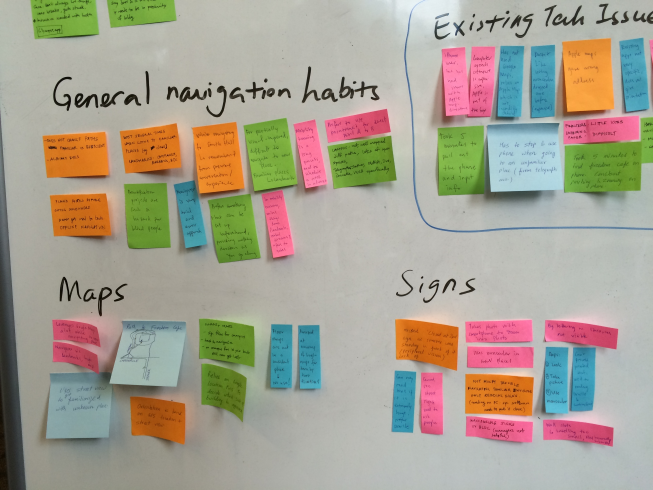
Key Observation
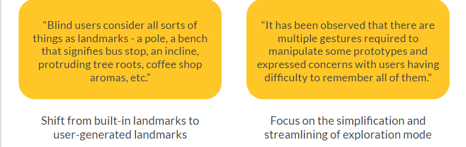
This showed us just how large our initial problem statement was. At this point our team decided to focus on the problem of providing environmental context when blind and visually impaired users navigated and how wearable technology could play a role in this process.
Low Fidelity Prototyping
We tried 4 different methods of prototyping to test out our ideas and get rapid feedback from users.
The User Flow We Developed
Google Glass has bone conducting audio which is better than earphones or headphones as it does not interfere with contextual noise (like traffic). The initial process flow (low res) that we came up with:  However, after analyzing available prototyping tools we realized that the best tool for us would be WearScript because it supported gestures, audio and gps. We developed a functional prototype using WearScript, a JavaScript library for Google Glass. The flow seen here is made up of screenshots from the actual app. You can also try a version of it here.
However, after analyzing available prototyping tools we realized that the best tool for us would be WearScript because it supported gestures, audio and gps. We developed a functional prototype using WearScript, a JavaScript library for Google Glass. The flow seen here is made up of screenshots from the actual app. You can also try a version of it here. 
Learning
To understand users and discover their fundamental intents, desires, and drivers you need to go out and talk with people
No design survives contact with users.
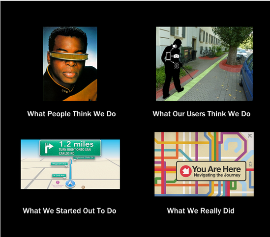
Future work in this area can focus on enhancing gestures, improving hardware, fortifying the landmark database, and using machine learning or computer vision to organize the landscape better.
“When people design, they create physical representations of their concepts.” - Beyer and Holtzblatt, Contextual Design
The Gadfly Project
Conversation as an interface.
- User Research, Product Vision, Conversational Design, Slack Bot Development, Asking the Right Questions
What is the Gadfly Project?
You can try it out here with the URL to a news article. The Gadfly Project is an API that uses natural langugage processing to generate meaningful questions.
I designed and developed 2 Slack bots to demonstrate the potential of our API. The API enables and empowers several use cases in different domains such as education, online news reading, commenting, employee training, knowledge management, and onboarding to name a few.
 I also made this simple poster for more info.
I also made this simple poster for more info.
Initial Hypothesis
Here's a simple example of the idea. Imagine that you just read an article that you want to comment on. Now, you will be asked a question generated by our service to demonstrate that you actually read the article. Here's how it might look:
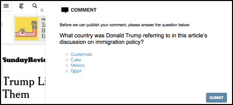
Researching the Problem
We interviewed three local newspaper publishers (Berkeleyside, SFGate, Daily Cal) to find out what they thought of our idea.
Substituting a question for login is plausible but we need to see it in action. — Lance Knobel, co-founder of Berkeleyside
All these publishers were open to the idea of integrating our software with their existing provider, Disqus. So, we spoke to the CEO of Disqus who thought that questions could be a good prompt to motivate the user to engage with the article.
It would be interesting to see how the questions asked influence the quality of the resulting comment. — Daniel Ha, CEO of Disqus
Takeaway: They were interested but it was not a big enough problem to be an immediate priority. It was hard to explain our idea without a working product.
Surveying Readers
We used a survey to understand people's news reading and online commenting behavior. Within 10 days, we received 181 responses (82% completion rate!).
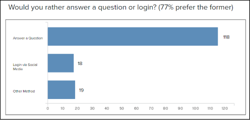
Product Vision
I defined product vision by imagining what The Gadfly Project could be using the working backwards approach I learned at Amazon. This helped the team communicate in more concrete terms. You can read it here.
Why Trivia? Why Bots?
From our interviews, we noticed that people came up with trivia as a use case on their own. One of our key stakeholders, our advisor, encouraged us to explore the trivia use case. We had access to the school slack which provided a controlled testing ground and access to over 250 users. Our second use case was for testing the use of questions for engagement.
Mapping Potential Flows
As a team we ideated different scenarios and created a set of high-level actions that would need to be supported for these use cases. We then decided to focus on one using flow charts to map flow and interactions.
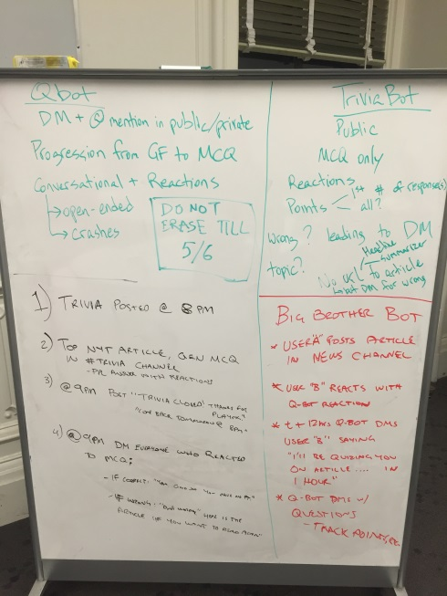 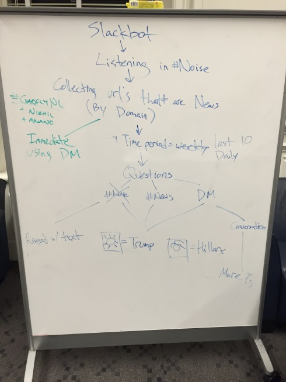
Initially, we wanted to make 1 bot. However, this was confusing for our test users as both use cases were pretty different. Below are flowcharts showing what we thought would work. However, our small engineering team (of 3) was focused on improving our underlying algorithm. So, I took up the responsibility of building the bot. After doing a feasibility and scope analysis and going through the Slack API, I realized that we would need to change.
 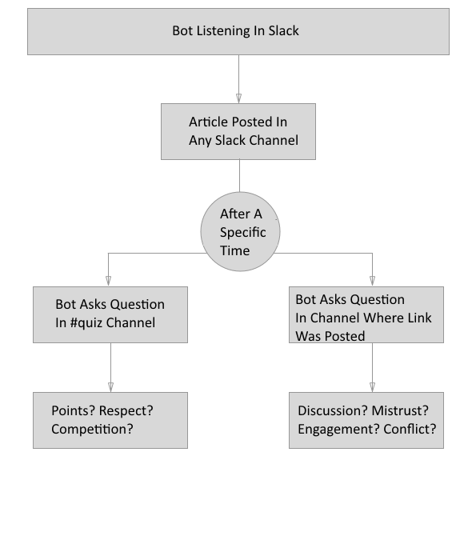
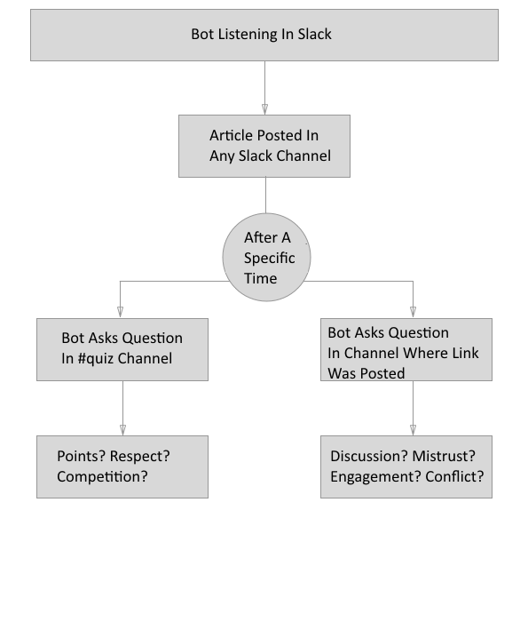
Reducing User Friction
Since our use case was new, I wanted to lower the barrier of entry for our users. Not everyone has the same level of familiarity with Slack and I made changes to our messages after testing. From rapid testing, I figured out that novice users were not familiar with reactions on Slack.
For each question, I added reactions representing each answer choice so that there would be no ambiguity about how the users should answer the question.
To eliminate one more level of friction, I used Slack's /remind feature to automate the trivia flow leading to increased engagement.
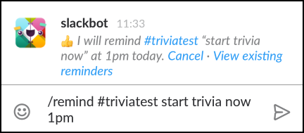
 Rapid Iterative Testing
Rapid Iterative Testing
The 2 Slack Bots (news and trivia) helped the team gather quick feedback from more than 20 users. I integrated Slack's reaction feature as a way of gathering quantitative feedback about the questions generated. From qualitative feedback, we were able to improve our conversational flow. As a result of the data collected, we could improve the API. One of the main improvements was the addition of multiple choice questions.
In Action
Below you can see an example flow (made using arctech). 
This is a screenshot of an actual trivia session we organized during our live demo.
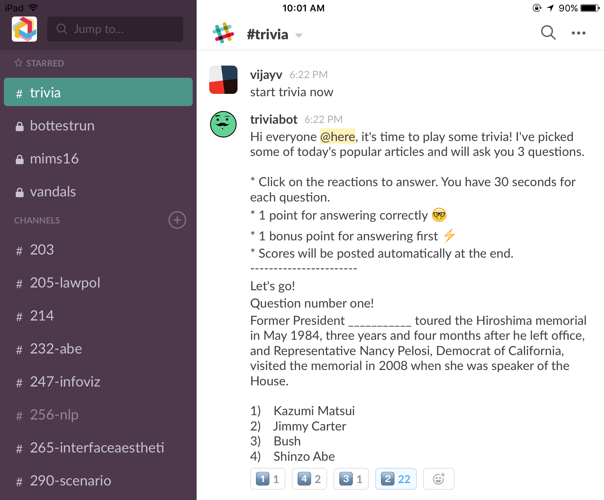 QBot and TriviaBot are good examples of what a curious developer can build using our API. If you have an ischool.berkeley.edu email address, you can join ischool.slack.com and try out our bots there!
What's Next
I am personally interested in the application of this approach to the problem of employee training and onboarding.
Some Thoughts On Bots
Paraphrasing Don Norman, the best interface is no interface. For me, conversational user interfaces (CUIs) have potential to be 'no interfaces'. Think of them as conversational endpoints. Now, it is true that trying to force them into all domains and all use cases is detrimental to the concept/trend. Not all CUIs are equally suitable for all tasks and recognizing this is important going forward.
PS. The Gadfly Project was recognized as an innovative, creative solution, and pragmatic application in the area of online information problems by the UC Berkeley School of Information. I am actively involved with the Slack Developer community and genuinely excited about conversation as interface.
Yackle
Helping communities share and grow their knowledge.
- User Research, User Experience Design, Front-End Development, Usability Testing, So Much Email
Motivation
There are no trustworthy platforms for members of academic communities to share their knowledge within their communities and outside the community.
Knowing and Growing
We built a private Q&A tool where people can ask questions to trusted communities, privately or publicly. You can try it here. Right now, we have 106 users (including incoming students, current students, alumni and admin staff) engaging with the website. 106 might seem like a small number but the school itself has only roughly 150 people.
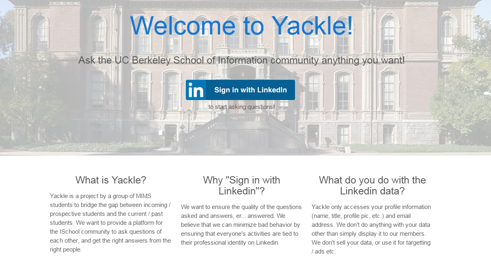
Inside Look
The sign up page that uses LinkedIn OAuth. After usability testing, we added copy to inform users why we require them to log in using LinkedIn and what we do with their data.
 The main view is different questions asked by community members. The main UI elements are highlighted.
The main view is different questions asked by community members. The main UI elements are highlighted.
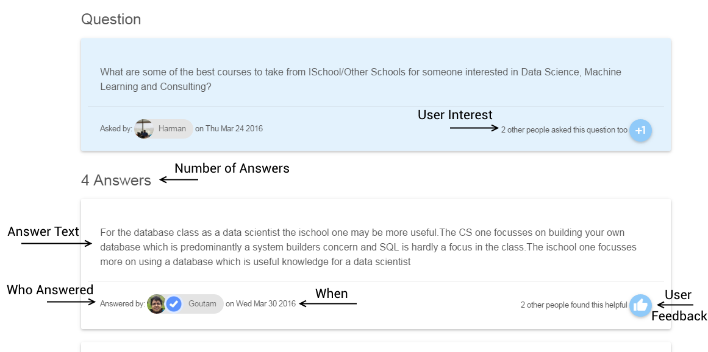 When a user clicks on a question, they see the individual question and answers. The interface elements maintain familiarity with the previous page.
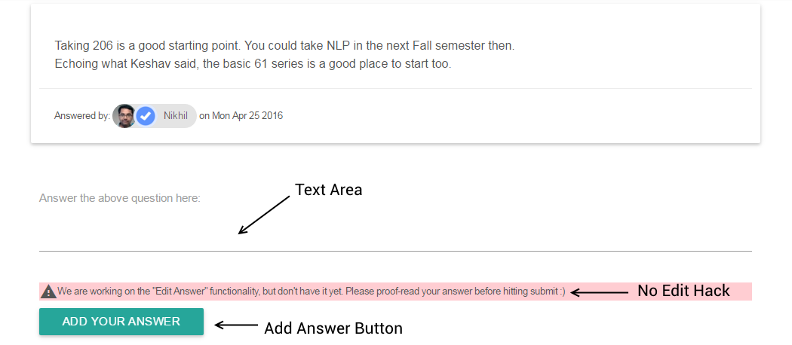 The user can add their own answer here. We added a small line (the "no edit hack" above) to promote more mindfulness while answering.
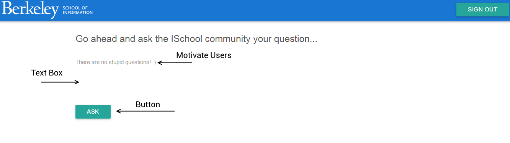 If a user clicks on the ask button on the home page they see this screen. We kept this page very simple to avoid distractions.
Improving the Product
I carried out user research (interviews, usability testing, card sort) to identify short term fixes and long term improvements. I also manually emailed our users to simulate notifications and ensure that they were engaged. Finally, I had to come up with a logo (remind you of something?)
Roadmap
Insights from the summative research I conducted help us prioritize the items on our roadmap.
Eg. We found out that we need to Improve Discovery [by providing Search or other Discovery mechanism], Improve Engagement [using Automated Notifications, Feeds], allow users to target questions at subject matter experts. For the long term, we want to drive wider adoption and scale the system to handle several communities.
If you are a member of the Berkeley I School community, I would encourage you to sign up at Yackle and give us feedback.
To Summarize
In my career, I look forward to owning experiences for products. This was a great experience working on a product end to end and being responsible not just for the user experience but also for the overall decision making process.
Kindle Content Design Intern @ Amazon
User research and exploratory design.
- Qualitative Research, Low Fidelity & High Fidelity Prototyping using Framer.js
In the Summer of 2015, I was a Design Intern at Amazon. I was assigned to the Kindle Content Design team and was tasked with studying and redesigning the Kindle Unlimited web experience. Unfortunately, I can't share any of these designs online but I can show them in person.
I performed competitive analysis on the Scribd & Oyster Books web products. I created and pitched a research plan for remote usability testing. The main goal of the proposal was to find discoverability issues on Kindle Unlimited in the first part of my internship. The tests were approximately one-hour remote interactions with customers where I asked them to carry out tasks and observed their interactions within the existing framework. I also looked at assessing what people actually like about the experience too.
I then carried out remote usability testing on Kindle Unlimited Web users, extracted actionable insights using affinity diagramming.
 I then worked on low fidelity wireframes and high fidelity prototypes. I went beyond expectations and identified short term fixes that could be fixed easily. I built a case for each recommendation using quantitative data from Amazon's internal web analytics & A/B testing platform. I also observed other areas of the experience like search, wishlist and new content discovery. I worked with the product manager to convert my insights for the Kindle Store including a suggestion for a new feature.
I then worked on low fidelity wireframes and high fidelity prototypes. I went beyond expectations and identified short term fixes that could be fixed easily. I built a case for each recommendation using quantitative data from Amazon's internal web analytics & A/B testing platform. I also observed other areas of the experience like search, wishlist and new content discovery. I worked with the product manager to convert my insights for the Kindle Store including a suggestion for a new feature.
During the course of my internship, I followed a data informed approach and adhered to Amazon's customer obsession philosophy. I presented to several team members, received feedback and integrated it into my work.
Finally, I designed explorations for the Kindle Unlimited storefront. These included redesigning the landing page, the sign up page, the recommendations feature, and the carousels. I also came up with brand new designs for an onboarding process and a curatorial section for featuring books.
TweetDay
Visualizing your time away from Twitter.
- Academic & User Research, Interaction Design, Front-end Development
In Case You Missed It
People and organizations use the acronym ICYMI to bring content to the attention of those who may have missed it before. How might we create something that would show users what they missed when they went away from Twitter?
One of our testers remarked,"This is actually making me want to log in to my twitter account more!" Try it here.
The Challenge
In order to verify our hypothesis, we interviewed a diverse range of people and found that even self-identified "savvy" respondents were frustrated with the amount of information that they had to deal with.
-- Users missed and expected to see a broad range of information daily.
-- Users wanted to quickly glance at this information in a limited space.
-- Users wanted to take control of their timeline and filter based on retweets, favorites, or media type (picture/video).
Initial Design
Our very first designs attempted to present tweets to users on a scatter plot. However, this represented only two variables -- time and people. From user feedback, we realized that too much information was being presented on the dots signifying tweets themselves.
The next iteration chose to simplify this by presenting the tweets as a heatmap.
Inspiration
We looked to financial websites which used TreeMaps (example) to display a broad range of varied information daily.
We used the SeeSoft visualization to display every tweet as a line of text in a column on the left (example). The length of a line is representative of the tweet length.
When you hover on a cell on the right, you see the tweet in detail.
Power to the Users
Here's one of the key interactions designed to support users' need for filtering. Users can choose to filter by retweets or favorites and based on the kind of multimedia.
 The blue arcs on the left trace connections between tweets and identify common themes if any. You can see me debating the merits of Groundhog Day below.
The blue arcs on the left trace connections between tweets and identify common themes if any. You can see me debating the merits of Groundhog Day below.
 We present about 2000 tweets in a single area on the left. Users can also dragged the ends of the scale to see only tweets from a certain period (screenshot below).
We present about 2000 tweets in a single area on the left. Users can also dragged the ends of the scale to see only tweets from a certain period (screenshot below).
 User Reactions
User Reactions
"This is definitely something that I would want to use."
"I don’t think anything like this exists and I would like to use it when it comes out."
In Retrospect
Overall, I felt like we had delivered on what we set out to make. But I don't think we solved all that we thought we would solve.
By introducing an onboarding process so that users can familiarize themselves with the different elements we can fix some of our problems. The contact area is so small, users have to hover very precisely over each element in the block to see the individual tweets.
We created a different way for existing users (who are struggling with the information overload) to keep in touch. In terms of engagement and interactions, the fact that users can't retweet or favorite the tweets they see here can be a barrier to adoption. I definitely think the TweetDay experience can be bettered as we work on known issues and continue to iterate on the designs going forward.
Clover
Collaborative "endless walking" game.
- Participant Observation, Laser Cutting, 3D Printing, A lot of Gluing Things Together
Ready, Player One?
Clover is a community oriented video game that aims to reduce social anxiety while waiting, and promote cooperative social interactions between members.
Transforming the Waiting Experience
The assignment was focused on designing for communities and the one we chose was the dinner line that forms in the Cloyne Court student housing cooperative — the biggest in the US. Scroll down to see a video of the game being played by some members of Cloyne Court.
Discovering the Problem
We did participant observations at dinner time for three days and also interviewed residents while they waited to find out more.
The key findings from the interview were that members felt the line has become uncooperative over the semesters and the community is stressed at dinner time. From our interviews we found out that collaborative fun is one of the main stress busters for the community. So, we decided to make a collaborative game.
Level One?
Here are some of the ideas we sketched during our brainstorming.  To retain familiarity, we integrated dinner bowls from the Cloyne dinner hall into our design. We taped our laser-cut buttons on the top and turned them into simple game controllers! Each bowl contained a raspberry pi to transmit user input (pressing the button) over WiFi to our Node.js server.
To retain familiarity, we integrated dinner bowls from the Cloyne dinner hall into our design. We taped our laser-cut buttons on the top and turned them into simple game controllers! Each bowl contained a raspberry pi to transmit user input (pressing the button) over WiFi to our Node.js server.  Instructions
Instructions
The player has to press a button to make the chameleon change its color to the color of the leaf coming up. The challenge is that there are just 3 buttons: red, blue and yellow. So, a player has to coordinate with other players to match the secondary colors. For example, players need to press red and blue to match a green leaf.
Gameplay
The resulting interaction is not just cooperative, but challenging and funny as you can see in this video.
Feedback
Players loved the high score feature, enjoyed the bowl integration, and — get this — were even looking forward to the dinner line the next day. We also found out that there was delay due to the WiFi latency and unclear affordances. It took players a while to figure out that they need to match the color of the next, not current, leaf.
Next Level
In the future in terms of design, we want to revisit controller design & form factors. The bowls were cumbersome and we found it hard to debug the hardware components inside. We also want to explore different feedback methods besides color change (such as music, walking speed).
You can try out the game (minus the cool buttons) at queuemeleon.herokuapp.com on a desktop browser. Click the title screen to begin the game.
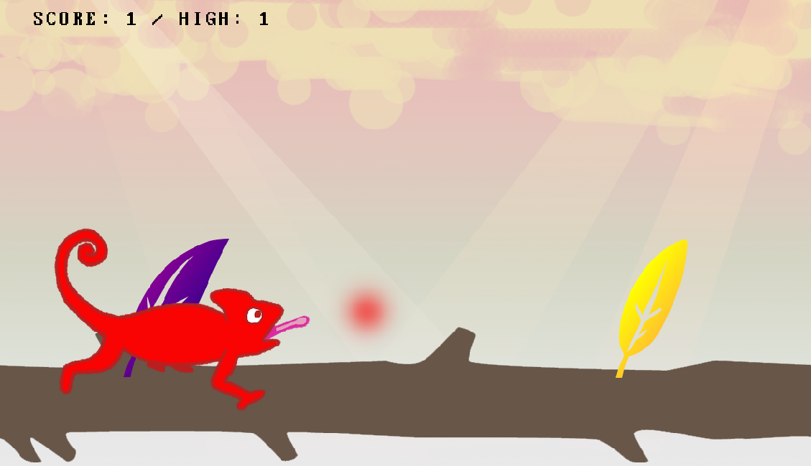
Narrative Infographic
Narrative infographic.
- Illustrator, Poster Design, Drawing Pokémon
Twitch Is
Twitch is a live streaming video platform that mainly focuses on video gaming, including esports broadcasts, playthroughs by users, and other gaming-related events. By February 2014, it was considered the fourth largest source of peak Internet traffic in the United States.
The infographic depicts Twitch’s growth from 2013 to February 2014 along with the position it occupies in the growing online video consumption space. I have also included a brief narrative of Twitch Plays Pokemon, a social experiment to play the Pokemon game series using commands input via chat.
Design Choices
Since, the subject deals with video games, I used 8bit icons and typography. I also chose to demarcate the sections with “hand drawn” dotted lines. I added comic book style transition arrows for effect as well as for maintaining a clear visual hierarchy. I also drew the Pokemon used and outlined them using Illustrator.
All praise Lord Helix!

Pronto
Inventory management for Small Businesses.
- Concept Generation, Low Fidelity Prototyping, Android App Design & Development
Winner of the Best Overall Award and the Audience Favorite Award
Problem Statement
Small businesses are the backbone of U.S. economy – over 50% of the population works for SMB and 500k SMBs are started each month. Yet, SMBs face unique challenges on their path to success, on how to succeed in a new market, or compete against much larger incumbents. We hacked together a working prototype of an application or mobile application that will help small business owners.
Value Proposition
Helping local small businesses manage their excess inventory by connecting them with customers.
A Common Complaint Emerged
We visited local stores, watched customers at the stores, and interviewed store owners. We wanted to understand their life, environment, behaviors, what problems do they have and what hacks they use to solve these problems. We heard that business owners often had wasted excess inventory at the end of the day or they would have downtime with no customers. One of our team members even saw a cupcake store owner dump leftover food at the end of the day. We wanted to help SMBs such as food shops and hair salons take care of this problem.
Designing for Simplicity
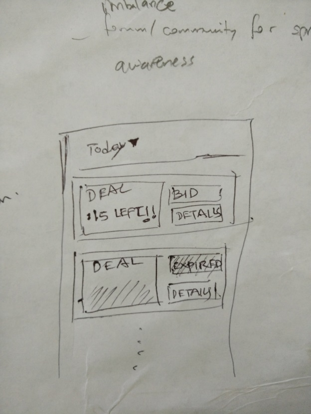  We started off with an auction model. However, after talking about this idea with our hackathon mentor and seeing him struggle to comprehend the business model, it dawned on us that this would be too complicated for a SMB to quickly grasp and use. This prompted our team to change our design to be a much more simplified purchasing model for each timeslot.
We started off with an auction model. However, after talking about this idea with our hackathon mentor and seeing him struggle to comprehend the business model, it dawned on us that this would be too complicated for a SMB to quickly grasp and use. This prompted our team to change our design to be a much more simplified purchasing model for each timeslot.
Our Main Goals
Create a channel to get rid of the excess inventory as well as to get new customers into their store.
Connect local SMBs and customers via this channel.
Make the channel less intrusive and simple.
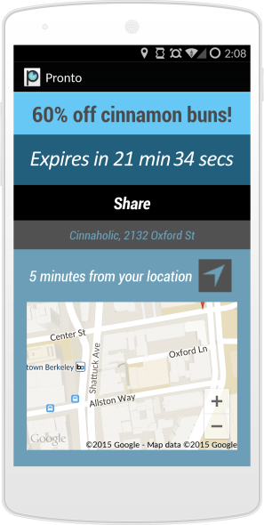
Design Decisions
We designed Pronto such that users who downloaded the app would only receive one offer, called a “Pronto”, every hour, on the hour for a place within 20 minutes walking distance. Once they received the offer, they had only 60 minutes to redeem the offer. We wanted to build both anticipation as well as the fear of missing out for each offer.
For the Business app, users would see a timeslot that has expired, prompting a reactionary desire to purchase the next timeslot. The next timeslot shows a time to expiration and remaining coupons (or 'prontos'). The business owners can only purchase for the next two hours, which focuses them on an immediate purchase, and reduces additional contemplation or analysis. After he/she has chosen a timeslot, the screen then prompts them to adjust how many 'prontos' to send out to consumers with the app. The price of these deals is displayed as a round number to reduce complexity.
What I Did
Learned & developed an Android app in 4 hours!
Designed the Business end of the app.
Developed the mapping features on the Customer end of the app.
Experiments
Side projects.
- Tinkering
Last year I designed a mobile app, a simple to-do app that gets shit done, for a design challenge. I wanted to make something that would be very different from most of the to-do apps that are seen out there while keeping user centered design principles in mind. I was inspired to make this due to a quote by Chief Box man, Aaron Levie.
The idea is simple. You can only add single tasks (no multitasking) at a given time. The app provides some (questionable but funny) motivation. This can be extended through notifications (if you want it to). It also should give you the ability to repeat specific tasks so that you can potentially form habits (Eg. I am trying to read 1 article that I have saved to Pocket every day).
Here are the designs (writeup in progress):
Log In
 Walkthrough
Walkthrough
 Home
Home
Calendar